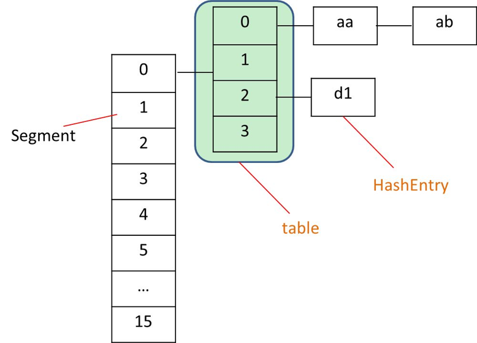
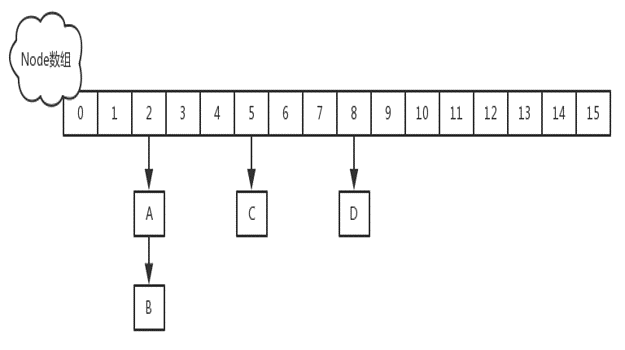
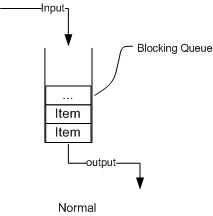
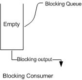
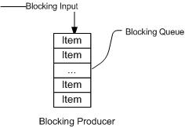
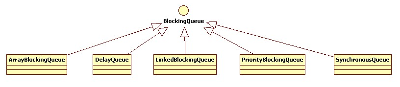

ConcurrentHashMap从JDK1.5开始随java.util.concurrent包一起引入JDK中，主要为了解决HashMap线程不安全和Hashtable效率不高的问题。众所周知，HashMap在多线程编程中是线程不安全的，而Hashtable由于使用了synchronized修饰方法而导致执行效率不高；因此，在concurrent包中，实现了ConcurrentHashMap以使在多线程编程中可以使用一个高性能的线程安全HashMap方案。
Hashtable效率低下的主要原因是其实现使用了synchronized关键字对put等操作进行加锁，而synchronized关键字加锁是对整个对象进行加锁，也就是说在进行put等修改Hash表的操作时，锁住了整个Hash表，从而使得其表现的效率低下；因此，在JDK1.5~1.7版本，Java使用了分段锁机制实现ConcurrentHashMap.

在ConcurrentHashMap中，定义了一个Segment<K, V>[]数组来将Hash表实现分段存储，从而实现分段加锁；而么一个Segment元素则与HashMap结构类似，其包含了一个HashEntry数组，用来存储Key/Value对。Segment继承了ReetrantLock，表示Segment是一个可重入锁，因此ConcurrentHashMap通过可重入锁对每个分段进行加锁。
ConcurrentHashMap初始化时，计算出Segment数组的大小ssize和每个Segment中HashEntry数组的大小cap，并初始化Segment数组的第一个元素；其中ssize大小为2的幂次方，默认为16，cap大小也是2的幂次方，最小值为2，最终结果根据根据初始化容量initialCapacity进行计算
ConcurrentHashMap包含多个构造函数，而所有的构造函数最终都调用了如下的构造函数：
public ConcurrentHashMap(int initialCapacity,
float loadFactor, int concurrencyLevel) {
if (!(loadFactor > 0) || initialCapacity < 0 || concurrencyLevel <= 0)
throw new IllegalArgumentException();
if (concurrencyLevel > MAX_SEGMENTS)
concurrencyLevel = MAX_SEGMENTS;
// Find power-of-two sizes best matching arguments
int sshift = 0;
int ssize = 1;
while (ssize < concurrencyLevel) {
++sshift;
ssize <<= 1;
}
this.segmentShift = 32 - sshift;
this.segmentMask = ssize - 1;
if (initialCapacity > MAXIMUM_CAPACITY)
initialCapacity = MAXIMUM_CAPACITY;
int c = initialCapacity / ssize;
if (c * ssize < initialCapacity)
++c;
int cap = MIN_SEGMENT_TABLE_CAPACITY;
while (cap < c)
cap <<= 1;
// create segments and segments[0]
Segment<K,V> s0 =
new Segment<K,V>(loadFactor, (int)(cap * loadFactor),
(HashEntry<K,V>[])new HashEntry[cap]);
Segment<K,V>[] ss = (Segment<K,V>[])new Segment[ssize];
UNSAFE.putOrderedObject(ss, SBASE, s0); // ordered write of segments[0]
this.segments = ss;
}put实现
当执行put方法插入数据时，根据key的hash值，在Segment数组中找到相应的位置，如果相应位置的Segment还未初始化，则通过CAS进行赋值，接着执行Segment对象的put方法通过加锁机制插入数据，实现如下：
场景：线程A和线程B同时执行相同Segment对象的put方法
1、线程A执行tryLock()方法成功获取锁，则把HashEntry对象插入到相应的位置；
2、线程B获取锁失败，则执行scanAndLockForPut()方法，在scanAndLockForPut方法中，会通过重复执行tryLock()方法尝试获取锁，在多处理器环境下，重复次数为64，单处理器重复次数为1，当执行tryLock()方法的次数超过上限时，则执行lock()方法挂起线程B；
3、当线程A执行完插入操作时，会通过unlock()方法释放锁，接着唤醒线程B继续执行；
size实现
因为ConcurrentHashMap是可以并发插入数据的，所以在准确计算元素时存在一定的难度，一般的思路是统计每个Segment对象中的元素个数，然后进行累加，但是这种方式计算出来的结果并不一样的准确的，因为在计算后面几个Segment的元素个数时，已经计算过的Segment同时可能有数据的插入或则删除，在1.7的实现中，采用了如下方式：
1、先采用不加锁的方式，连续计算元素的个数，最多计算3次：
2、如果前后两次计算结果相同，则说明计算出来的元素个数是准确的；
3、如果前后两次计算结果都不同，则给依次每个Segment进行加锁，再计算一次元素的个数，然后再依次释放锁；
在JDK1.7之前，ConcurrentHashMap是通过分段锁机制来实现的，所以其最大并发度受Segment的个数限制。因此，在JDK1.8中，ConcurrentHashMap的实现原理摒弃了这种设计，而是选择了与HashMap类似的数组+链表+红黑树的方式实现，而加锁则采用CAS和synchronized实现。

JDK1.8的ConcurrentHashMap数据结构比JDK1.7之前的要简单的多，其使用的是HashMap一样的数据结构：数组+链表+红黑树。ConcurrentHashMap中包含一个table数组，其类型是一个Node数组；而Node是一个继承自Map.Entry<K, V>的链表，而当这个链表结构中的数据大于8，则将数据结构升级为TreeBin类型的红黑树结构。另外，JDK1.8中的ConcurrentHashMap中还包含一个重要属性sizeCtl，其是一个控制标识符，不同的值代表不同的意思：其为0时，表示hash表还未初始化，而为正数时这个数值表示初始化或下一次扩容的大小，相当于一个阈值；即如果hash表的实际大小>=sizeCtl，则进行扩容，默认情况下其是当前ConcurrentHashMap容量的0.75倍；而如果sizeCtl为-1，表示正在进行初始化操作；而为-N时，则表示有N-1个线程正在进行扩容。
只有在执行第一次put方法时才会调用initTable()初始化Node数组，实现如下：
private final Node<K,V>[] initTable() {
Node<K,V>[] tab; int sc;
while ((tab = table) == null || tab.length == 0) {
if ((sc = sizeCtl) < 0)
Thread.yield(); // lost initialization race; just spin
else if (U.compareAndSwapInt(this, SIZECTL, sc, -1)) {
try {
if ((tab = table) == null || tab.length == 0) {
int n = (sc > 0) ? sc : DEFAULT_CAPACITY;
@SuppressWarnings("unchecked")
Node<K,V>[] nt = (Node<K,V>[])new Node<?,?>[n];
table = tab = nt;
sc = n - (n >>> 2);
}
} finally {
sizeCtl = sc;
}
break;
}
}
return tab;
}put实现
当执行put方法插入数据时，根据key的hash值，在Node数组中找到相应的位置，实现如下：
1、如果相应位置的Node还未初始化，则通过CAS插入相应的数据；
2、如果相应位置的Node不为空，且当前该节点不处于移动状态，则对该节点加synchronized锁，如果该节点的hash不小于0，则遍历链表更新节点或插入新节点；
3、如果该节点是TreeBin类型的节点，说明是红黑树结构，则通过putTreeVal方法往红黑树中插入节点；
4、如果binCount不为0，说明put操作对数据产生了影响，如果当前链表的个数达到8个，则通过treeifyBin方法转化为红黑树，如果oldVal不为空，说明是一次更新操作，没有对元素个数产生影响，则直接返回旧值；
5、如果插入的是一个新节点，则执行addCount()方法尝试更新元素个数baseCount；
size实现
jdk1.8中使用一个volatile类型的变量baseCount记录元素的个数，当插入新数据或则删除数据时，会通过addCount()方法更新baseCount，实现如下：
1、初始化时counterCells为空，在并发量很高时，如果存在两个线程同时执行CAS修改baseCount值，则失败的线程会继续执行方法体中的逻辑，使用CounterCell记录元素个数的变化；
2、如果CounterCell数组counterCells为空，调用fullAddCount()方法进行初始化，并插入对应的记录数，通过CAS设置cellsBusy字段，只有设置成功的线程才能初始化CounterCell数组，实现如下：
3、如果通过CAS设置cellsBusy字段失败的话，则继续尝试通过CAS修改baseCount字段，如果修改baseCount字段成功的话，就退出循环，否则继续循环插入CounterCell对象；
其实可以看出JDK1.8版本的ConcurrentHashMap的数据结构已经接近HashMap，相对而言，ConcurrentHashMap只是增加了同步的操作来控制并发，从JDK1.7版本的ReentrantLock+Segment+HashEntry，到JDK1.8版本中synchronized+CAS+HashEntry+红黑树。
1.数据结构：取消了Segment分段锁的数据结构，取而代之的是数组+链表+红黑树的结构。
2.保证线程安全机制：JDK1.7采用segment的分段锁机制实现线程安全，其中segment继承自ReentrantLock。JDK1.8采用CAS+Synchronized保证线程安全。
3.锁的变化：原来是对需要进行数据操作的Segment加锁，现调整为对每个数组元素加锁（Node）。
4.链表转化为红黑树:定位结点的hash算法简化会带来弊端,Hash冲突加剧,因此在链表节点数量大于8时，会将链表转化为红黑树进行存储。
5.查询时间复杂度：从原来的遍历链表O(n)，变成遍历红黑树O(logN)。
注意：该随笔内容完全引自http://wsmajunfeng.iteye.com/blog/1629354，写的很好，非常感谢，复制过来算是个积累，怕以后找不到。
在新增的Concurrent包中，BlockingQueue很好的解决了多线程中，如何高效安全“传输”数据的问题。通过这些高效并且线程安全的队列类，为我们快速搭建高质量的多线程程序带来极大的便利。本文详细介绍了BlockingQueue家庭中的所有成员，包括他们各自的功能以及常见使用场景。
阻塞队列，顾名思义，首先它是一个队列，而一个队列在数据结构中所起的作用大致如下图所示：

从上图我们可以很清楚看到，通过一个共享的队列，可以使得数据由队列的一端输入，从另外一端输出；
常用的队列主要有以下两种：（当然通过不同的实现方式，还可以延伸出很多不同类型的队列，DelayQueue就是其中的一种）
先进先出（FIFO）：先插入的队列的元素也最先出队列，类似于排队的功能。从某种程度上来说这种队列也体现了一种公平性。
后进先出（LIFO）：后插入队列的元素最先出队列，这种队列优先处理最近发生的事件。
多线程环境中，通过队列可以很容易实现数据共享，比如经典的“生产者”和“消费者”模型中，通过队列可以很便利地实现两者之间的数据共享。假设我们有若干生产者线程，另外又有若干个消费者线程。如果生产者线程需要把准备好的数据共享给消费者线程，利用队列的方式来传递数据，就可以很方便地解决他们之间的数据共享问题。但如果生产者和消费者在某个时间段内，万一发生数据处理速度不匹配的情况呢？理想情况下，如果生产者产出数据的速度大于消费者消费的速度，并且当生产出来的数据累积到一定程度的时候，那么生产者必须暂停等待一下（阻塞生产者线程），以便等待消费者线程把累积的数据处理完毕，反之亦然。然而，在concurrent包发布以前，在多线程环境下，我们每个程序员都必须去自己控制这些细节，尤其还要兼顾效率和线程安全，而这会给我们的程序带来不小的复杂度。好在此时，强大的concurrent包横空出世了，而他也给我们带来了强大的BlockingQueue。（在多线程领域：所谓阻塞，在某些情况下会挂起线程（即阻塞），一旦条件满足，被挂起的线程又会自动被唤醒），下面两幅图演示了BlockingQueue的两个常见阻塞场景
：
如上图所示：当队列中没有数据的情况下，消费者端的所有线程都会被自动阻塞（挂起），直到有数据放入队列。

如上图所示：当队列中填满数据的情况下，生产者端的所有线程都会被自动阻塞（挂起），直到队列中有空的位置，线程被自动唤醒。
这也是我们在多线程环境下，为什么需要BlockingQueue的原因。作为BlockingQueue的使用者，我们再也不需要关心什么时候需要阻塞线程，什么时候需要唤醒线程，因为这一切BlockingQueue都给你一手包办了。既然BlockingQueue如此神通广大，让我们一起来见识下它的常用方法：
1.放入数据
（1）offer(anObject):表示如果可能的话,将anObject加到BlockingQueue里,即如果BlockingQueue可以容纳,则返回true,否则返回false.（本方法不阻塞当前执行方法
的线程）；
（2）offer(E o, long timeout, TimeUnit unit)：可以设定等待的时间，如果在指定的时间内，还不能往队列中加入BlockingQueue，则返回失败。
（3）put(anObject):把anObject加到BlockingQueue里,如果BlockQueue没有空间,则调用此方法的线程被阻断直到BlockingQueue里面有空间再继续.
（1）poll(time):取走BlockingQueue里排在首位的对象,若不能立即取出,则可以等time参数规定的时间,取不到时返回null;
（2）poll(long timeout, TimeUnit unit)：从BlockingQueue取出一个队首的对象，如果在指定时间内，队列一旦有数据可取，则立即返回队列中的数据。否则知道时间
超时还没有数据可取，返回失败。
（3）take():取走BlockingQueue里排在首位的对象,若BlockingQueue为空,阻断进入等待状态直到BlockingQueue有新的数据被加入;
（4）drainTo():一次性从BlockingQueue获取所有可用的数据对象（还可以指定获取数据的个数），通过该方法，可以提升获取数据效率；不需要多次分批加锁或释放锁。
在了解了BlockingQueue的基本功能后，让我们来看看BlockingQueue家庭大致有哪些成员？

基于数组的阻塞队列实现，在ArrayBlockingQueue内部，维护了一个定长数组，以便缓存队列中的数据对象，这是一个常用的阻塞队列，除了一个定长数组外，ArrayBlockingQueue内部还保存着两个整形变量，分别标识着队列的头部和尾部在数组中的位置。
ArrayBlockingQueue在生产者放入数据和消费者获取数据，都是共用同一个锁对象，由此也意味着两者无法真正并行运行，这点尤其不同于LinkedBlockingQueue；按照实现原理来分析，ArrayBlockingQueue完全可以采用分离锁，从而实现生产者和消费者操作的完全并行运行。Doug Lea之所以没这样去做，也许是因为ArrayBlockingQueue的数据写入和获取操作已经足够轻巧，以至于引入独立的锁机制，除了给代码带来额外的复杂性外，其在性能上完全占不到任何便宜。 ArrayBlockingQueue和LinkedBlockingQueue间还有一个明显的不同之处在于，前者在插入或删除元素时不会产生或销毁任何额外的对象实例，而后者则会生成一个额外的Node对象。这在长时间内需要高效并发地处理大批量数据的系统中，其对于GC的影响还是存在一定的区别。而在创建ArrayBlockingQueue时，我们还可以控制对象的内部锁是否采用公平锁，默认采用非公平锁。
2.LinkedBlockingQueue
基于链表的阻塞队列，同ArrayListBlockingQueue类似，其内部也维持着一个数据缓冲队列（该队列由一个链表构成），当生产者往队列中放入一个数据时，队列会从生产者手中获取数据，并缓存在队列内部，而生产者立即返回；只有当队列缓冲区达到最大值缓存容量时（LinkedBlockingQueue可以通过构造函数指定该值），才会阻塞生产者队列，直到消费者从队列中消费掉一份数据，生产者线程会被唤醒，反之对于消费者这端的处理也基于同样的原理。而LinkedBlockingQueue之所以能够高效的处理并发数据，还因为其对于生产者端和消费者端分别采用了独立的锁来控制数据同步，这也意味着在高并发的情况下生产者和消费者可以并行地操作队列中的数据，以此来提高整个队列的并发性能。
作为开发者，我们需要注意的是，如果构造一个LinkedBlockingQueue对象，而没有指定其容量大小，LinkedBlockingQueue会默认一个类似无限大小的容量（Integer.MAX_VALUE），这样的话，如果生产者的速度一旦大于消费者的速度，也许还没有等到队列满阻塞产生，系统内存就有可能已被消耗殆尽了。
ArrayBlockingQueue和LinkedBlockingQueue是两个最普通也是最常用的阻塞队列，一般情况下，在处理多线程间的生产者消费者问题，使用这两个类足以。
下面的代码演示了如何使用BlockingQueue：
(1) 测试类
import java.util.concurrent.BlockingQueue;
import java.util.concurrent.ExecutorService;
import java.util.concurrent.Executors;
import java.util.concurrent.LinkedBlockingQueue;
public class BlockingQueueTest {
public static void main(String[] args) throws InterruptedException {
// 声明一个容量为10的缓存队列
BlockingQueue<String> queue = new LinkedBlockingQueue<String>(10);
//new了三个生产者和一个消费者
Producer producer1 = new Producer(queue);
Producer producer2 = new Producer(queue);
Producer producer3 = new Producer(queue);
Consumer consumer = new Consumer(queue);
// 借助Executors
ExecutorService service = Executors.newCachedThreadPool();
// 启动线程
service.execute(producer1);
service.execute(producer2);
service.execute(producer3);
service.execute(consumer);
// 执行10s
Thread.sleep(10 * 1000);
producer1.stop();
producer2.stop();
producer3.stop();
Thread.sleep(2000);
// 退出Executor
service.shutdown();
}
}（2）生产者类
import java.util.Random;
import java.util.concurrent.BlockingQueue;
import java.util.concurrent.TimeUnit;
import java.util.concurrent.atomic.AtomicInteger;
/**
* 生产者线程
*
* @author jackyuj
*/
public class Producer implements Runnable {
private volatile boolean isRunning = true;//是否在运行标志
private BlockingQueue queue;//阻塞队列
private static AtomicInteger count = new AtomicInteger();//自动更新的值
private static final int DEFAULT_RANGE_FOR_SLEEP = 1000;
//构造函数
public Producer(BlockingQueue queue) {
this.queue = queue;
}
public void run() {
String data = null;
Random r = new Random();
System.out.println("启动生产者线程！");
try {
while (isRunning) {
System.out.println("正在生产数据...");
Thread.sleep(r.nextInt(DEFAULT_RANGE_FOR_SLEEP));//取0~DEFAULT_RANGE_FOR_SLEEP值的一个随机数
data = "data:" + count.incrementAndGet();//以原子方式将count当前值加1
System.out.println("将数据：" + data + "放入队列...");
if (!queue.offer(data, 2, TimeUnit.SECONDS)) {//设定的等待时间为2s，如果超过2s还没加进去返回true
System.out.println("放入数据失败：" + data);
}
}
} catch (InterruptedException e) {
e.printStackTrace();
Thread.currentThread().interrupt();
} finally {
System.out.println("退出生产者线程！");
}
}
public void stop() {
isRunning = false;
}
}（3）消费者类
import java.util.Random;
import java.util.concurrent.BlockingQueue;
import java.util.concurrent.TimeUnit;
/**
* 消费者线程
*
* @author jackyuj
*/
public class Consumer implements Runnable {
private BlockingQueue<String> queue;
private static final int DEFAULT_RANGE_FOR_SLEEP = 1000;
//构造函数
public Consumer(BlockingQueue<String> queue) {
this.queue = queue;
}
public void run() {
System.out.println("启动消费者线程！");
Random r = new Random();
boolean isRunning = true;
try {
while (isRunning) {
System.out.println("正从队列获取数据...");
String data = queue.poll(2, TimeUnit.SECONDS);//有数据时直接从队列的队首取走，无数据时阻塞，在2s内有数据，取走，超过2s还没数据，返回失败
if (null != data) {
System.out.println("拿到数据：" + data);
System.out.println("正在消费数据：" + data);
Thread.sleep(r.nextInt(DEFAULT_RANGE_FOR_SLEEP));
} else {
// 超过2s还没数据，认为所有生产线程都已经退出，自动退出消费线程。
isRunning = false;
}
}
} catch (InterruptedException e) {
e.printStackTrace();
Thread.currentThread().interrupt();
} finally {
System.out.println("退出消费者线程！");
}
}
}3. DelayQueue
DelayQueue中的元素只有当其指定的延迟时间到了，才能够从队列中获取到该元素。DelayQueue是一个没有大小限制的队列，因此往队列中插入数据的操作（生产者）永远不会被阻塞，而只有获取数据的操作（消费者）才会被阻塞。
使用场景：
DelayQueue使用场景较少，但都相当巧妙，常见的例子比如使用一个DelayQueue来管理一个超时未响应的连接队列。
4. PriorityBlockingQueue
基于优先级的阻塞队列（优先级的判断通过构造函数传入的Compator对象来决定），但需要注意的是PriorityBlockingQueue并不会阻塞数据生产者，而只会在没有可消费的数据时，阻塞数据的消费者。因此使用的时候要特别注意，生产者生产数据的速度绝对不能快于消费者消费数据的速度，否则时间一长，会最终耗尽所有的可用堆内存空间。在实现PriorityBlockingQueue时，内部控制线程同步的锁采用的是公平锁。
5. SynchronousQueue
一种无缓冲的等待队列，类似于无中介的直接交易，有点像原始社会中的生产者和消费者，生产者拿着产品去集市销售给产品的最终消费者，而消费者必须亲自去集市找到所要商品的直接生产者，如果一方没有找到合适的目标，那么对不起，大家都在集市等待。相对于有缓冲的BlockingQueue来说，少了一个中间经销商的环节（缓冲区），如果有经销商，生产者直接把产品批发给经销商，而无需在意经销商最终会将这些产品卖给那些消费者，由于经销商可以库存一部分商品，因此相对于直接交易模式，总体来说采用中间经销商的模式会吞吐量高一些（可以批量买卖）；但另一方面，又因为经销商的引入，使得产品从生产者到消费者中间增加了额外的交易环节，单个产品的及时响应性能可能会降低。
声明一个SynchronousQueue有两种不同的方式，它们之间有着不太一样的行为。公平模式和非公平模式的区别:
如果采用公平模式：SynchronousQueue会采用公平锁，并配合一个FIFO队列来阻塞多余的生产者和消费者，从而体系整体的公平策略；
但如果是非公平模式（SynchronousQueue默认）：SynchronousQueue采用非公平锁，同时配合一个LIFO队列来管理多余的生产者和消费者，而后一种模式，如果生产者和消费者的处理速度有差距，则很容易出现饥渴的情况，即可能有某些生产者或者是消费者的数据永远都得不到处理。
五. 小结
BlockingQueue不光实现了一个完整队列所具有的基本功能，同时在多线程环境下，他还自动管理了多线间的自动等待于唤醒功能，从而使得程序员可以忽略这些细节，关注更高级的功能。